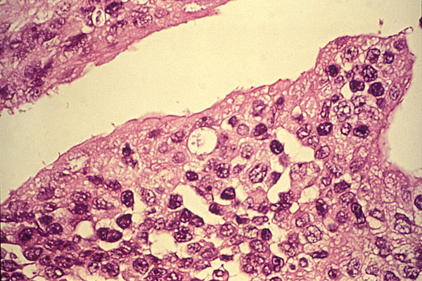

Chlamydia trachomatis
About
C. trachomatis is an obligate, aerobic, intracellular parasite of eukaryotic cells. It is a Gram-negative bacterium and has a coccoid or rod shape. It has a cytoplasmic membrane and outer membrane similar to Gram-negative bacteria (thus, it being classified as Gram-negative) but, it lacks a peptidoglycan cell wall. C. trachomatis require growing cells in order to remain viable since it cannot synthesize its own ATP. Without a host organism, C. trachomatis cannot survive on its own.
C. trachomatis is the leading cause of sexually transmitted disease worldwide--in the United States, alone, over 4 million cases are diagnosed each year. It is also the leading cause of preventable blindness (caused by a chlamydia infection called trachoma) in the world. C. trachomatis is also one of the major causes of pelvic inflammatory disease (PID) and infertility in women.
It is important to understand and sequence the genome of C. trachomatis because it would help us better understands its functions as a pathogen--the properties that allow it to live within its human host and its virulence and biological capabilities as a pathogen. Thus, an effort has been made to sequence most of the C. trachomatis genome.
Chlamydia trachomatis has a genome that consists of 1,042,519 nucleotide base pairs and has approximately 894 likely protein coding sequences. C. trachomatis strains have an extrachromosomal plasmid, which was sequenced to be a 7493-base pair plasmid. Because there is less than 1% nucleotide sequence variation, ll plasmids from human C. trachomatisisolates are considered to be very similar. All the isolates "are about 7,500 nucleotides long and have eight open reading frames computer-predicted to code for proteins of more than 100 amino acids, with short non-coding sequences between some of them.
Additional Information
Diseases
Diseases Brought about by Chlamydia trachomatis
In the United States, Chlamydia trachomatis (tra-KO-ma-tis) is responsible for more cases of sexually transmitted diseases (STDs) than any other organism. Sexually transmitted diseases are passed from one partner to another during sexual activity. It is estimated that between 4 and 8 million people are infected in the United States by Chlamydia trachomatis every year.
Chlamydia trachomatis also causes an eye infection called trachoma (tra-KO-ma), which is an inflammation of the membrane covering the eye. It causes the eye to become irritated and red with a thick discharge. Infants whose mothers' have Chlamydia infections may become infected during birth. These infants can develop eye infections a few days after birth or pneumonia several weeks after birth.
Chlamydia trachomatis Infection
Bacteria in Animals
Diseases brought about by bacteria’s
in the animals body have been rampantly spreading.
Back